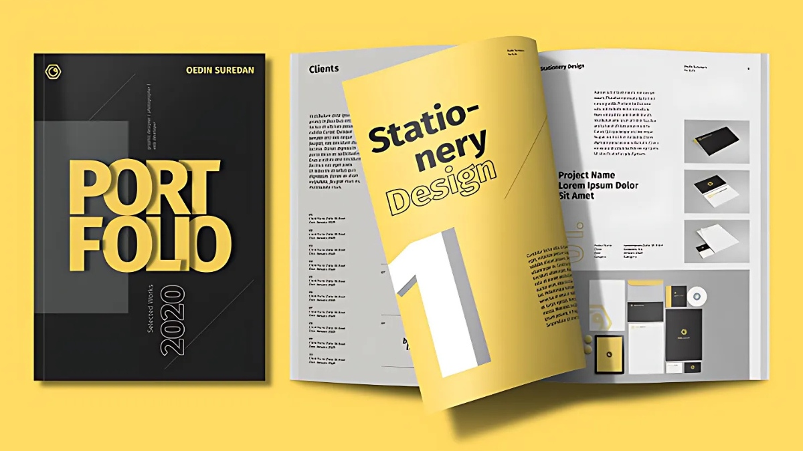
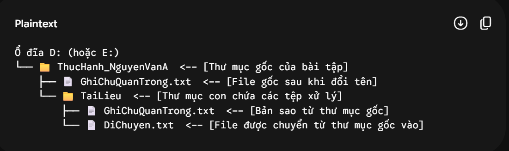
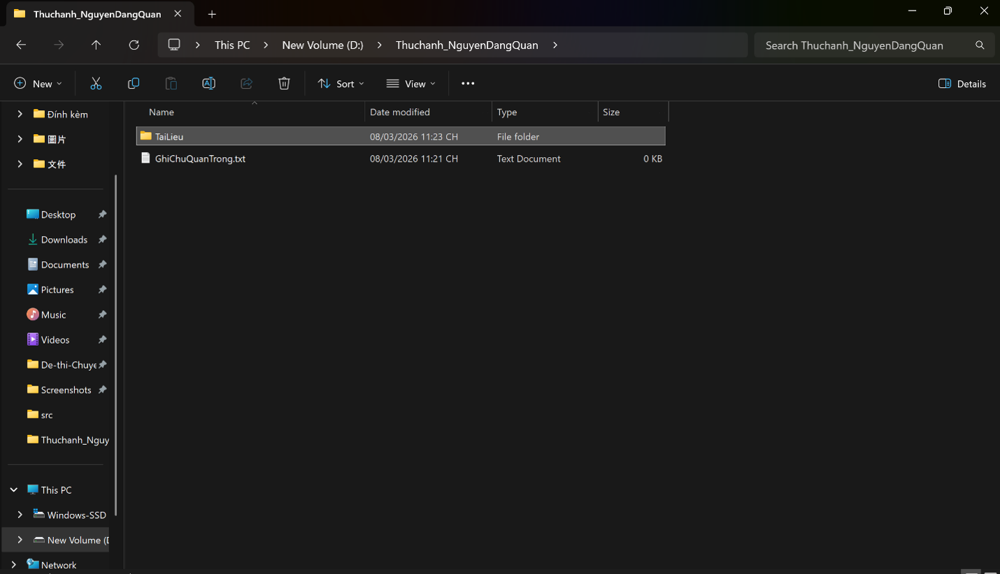
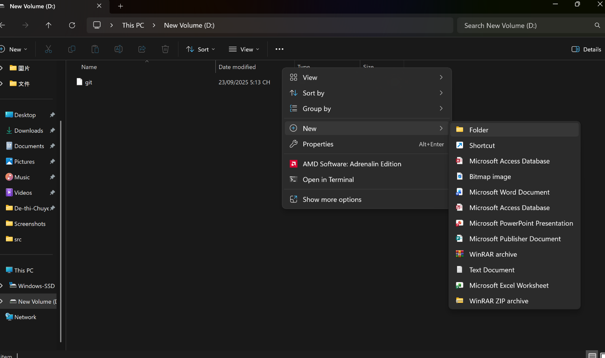
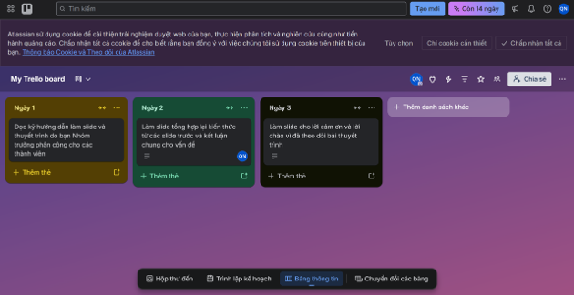
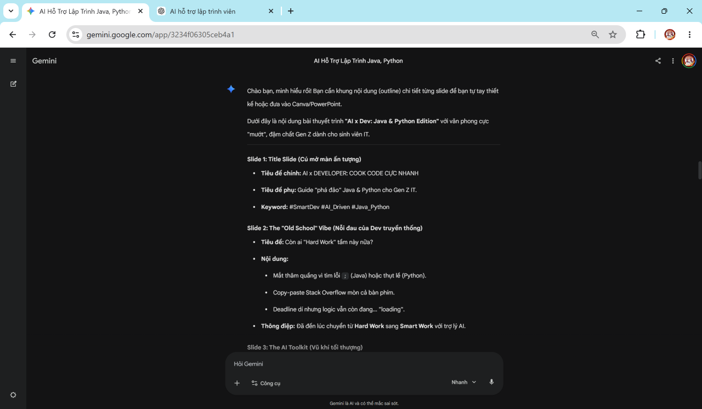
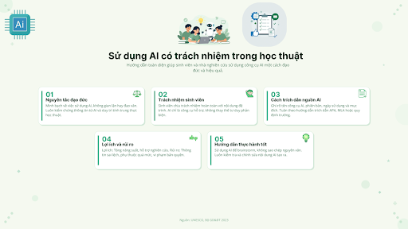

Mình là sinh viên Công nghệ thông tin (Khóa K70) tại UET - ĐHQGHN. Mình có niềm đam mê mạnh mẽ với việc xây dựng các hệ thống phần mềm và ứng dụng tính toán.
Phong cách làm việc của mình đề cao sự logic, chặt chẽ, tối ưu hóa thuật toán và vận dụng tư duy toán học vào việc giải quyết các bài toán lập trình thực tế.
Mục tiêu học tập
Mục tiêu ngắn hạn
Nắm vững nền tảng cấu trúc máy tính, hệ điều hành và kỹ thuật lập trình vi điều khiển.
Làm chủ các công cụ cộng tác trực tuyến và ứng dụng AI có trách nhiệm.
Đạt kết quả học tập xuất sắc và tham gia NCKH của trường.
Định hướng dài hạn
Trở thành Lập trình viên / Game Developer xuất sắc phát triển phần mềm và trò chơi thông minh.
Ứng dụng tư duy kỹ thuật số đóng góp giá trị cho cộng đồng công nghệ Việt Nam.

Mục tiêu Portfolio
Không gian này được thiết kế để hệ thống hóa toàn bộ kiến thức và kỹ năng đã tích lũy trong quá trình học tập và làm việc.
Đây là minh chứng trực quan cho năng lực tư duy, khả năng nghiên cứu độc lập và sự chuyên nghiệp trong việc trình bày các dự án kỹ thuật trước nhà tuyển dụng hoặc đối tác.
Danh sách Dự án
Bài 1
📁
Thao tác cơ bản với tập tin và thư mục
Trình bày cấu trúc thư mục tối ưu và quy tắc đặt tên tệp đã thiết lập, kèm ảnh chụp minh họa chi tiết quá trình quản lý dữ liệu.
Xem chi tiết →
Bài 2
🔍
Tìm kiếm và đánh giá thông tin học thuật
Trình bày kết quả tìm kiếm học thuật bằng các toán tử nâng cao và bảng đánh giá độ tin cậy của các nguồn tin (IEEE, ACM, Springer,...).
Xem chi tiết →
Bài 3
🤖
Viết Prompt hiệu quả cho các tác vụ học tập
Phân tích chuyên sâu sự khác biệt và tối ưu hóa từ Prompt cơ bản đến nâng cao (Role-playing) cùng kết quả đầu ra thực tế từ AI.
Xem chi tiết →
Bài 4
💬
Sử dụng công cụ hợp tác trực tuyến
Trình bày minh chứng rõ nét về việc sử dụng Trello Kanban, Google Docs và nền tảng chat để quản lý tiến độ và phối hợp nhóm.
Xem chi tiết →
Bài 5
🎨
Sử dụng AI tạo sinh hỗ trợ sáng tạo
Quy trình kiến tạo sản phẩm nội dung số hoàn thiện từ khâu lên kịch bản (Gemini) đến thiết kế đồ họa minh họa (Midjourney/DALL-E).
Xem chi tiết →
Bài 6
⚖️
Sử dụng AI có trách nhiệm trong học tập
Thiết lập và phân tích bộ 5 nguyên tắc cá nhân cốt lõi nhằm bảo đảm an toàn thông tin và bảo vệ liêm chính học thuật trong thời đại số.
Xem chi tiết →
Tổng kết & Cảm nhận
Nhìn lại hành trình hoàn thiện Portfolio này thông qua 6 bài thực hành, mình nhận ra đây không chỉ là việc rèn luyện các kỹ năng công cụ số, mà còn là một quá trình chuyển đổi tư duy sâu sắc. Từ những nền tảng cơ bản nhất như tối ưu hóa quản lý dữ liệu cho đến việc phối hợp làm việc nhóm trên không gian mạng, mỗi bài học đều giúp mình định hình tác phong làm việc nghiêm túc và chuyên nghiệp hơn.
Thông qua chuỗi dự án nhỏ này, mình đã làm chủ được bộ kỹ năng số thiết yếu bao gồm: Thiết lập hệ thống lưu trữ phân cấp khoa học; khai thác nâng cao các toán tử tìm kiếm học thuật; tối ưu hóa kỹ nghệ giao tiếp với AI (Prompt Engineering); và phối hợp nhóm theo thời gian thực trực tuyến. Đặc biệt hơn cả, mình đã nắm vững các nguyên tắc cốt lõi về an toàn thông tin và bảo vệ sự liêm chính học thuật trong kỷ nguyên số.
Điểm tâm đắc nhất: Trải nghiệm làm mình hài lòng nhất là quá trình tương tác thực tế với AI tạo sinh. Mình hiểu sâu sắc rằng AI không phải là công cụ thay thế khối óc con người, mà là một đòn bẩy khổng lồ. Giá trị thực sự nằm ở cách mình đặt vấn đề, tư duy phản biện để kiểm chứng dữ liệu độc lập (Fact-check) và giữ quyền kiểm soát tối cao đối với sản phẩm kỹ thuật.
Thách thức đã gặp phải: Việc tự tay thiết kế bố cục UI/UX tối giản và trực tiếp cấu trúc lại toàn bộ mã nguồn của cả 6 bài thực hành phức tạp vào trong một hệ thống file Web Portfolio HTML duy nhất mà không bị xung đột hiển thị, đảm bảo giao diện scannable rõ ràng chính là thử thách kỹ thuật lớn nhất mà mình đã kiên trì nghiên cứu và giải quyết thành công.
Hà Nội, 2026
Bài 1Thao tác cơ bản với tập tin và thư mục
Yêu cầu: Trình bày cấu trúc thư mục tối ưu và quy tắc đặt tên tệp đã thiết lập, kèm ảnh chụp minh họa.
1. Mục tiêu của bài tập
Rèn luyện và hoàn thiện kỹ năng cơ bản một cách thành thạo trên hệ điều hành Windows (có thể tùy biến cho macOS/Linux), bao gồm các thao tác:
Tạo mới thư mục và tệp tin văn bản.
Đổi tên, sao chép (Copy) và di chuyển (Cut) tệp tin.
Xóa tệp tin (xóa tạm thời vào Thùng rác và xóa vĩnh viễn không qua Thùng rác).
Khôi phục tệp tin đã xóa từ Thùng rác (Recycle Bin).
2. Quy tắc đặt tên tệp và thư mục
Không sử dụng tiếng Việt có dấu: Tránh lỗi mã hóa font chữ (Ký tự lạ như ă, â, ê) khi di chuyển tệp giữa các hệ điều hành khác nhau (Windows, macOS, Linux).
Không sử dụng ký tự đặc biệt: Tuyệt đối không chứa các ký tự cấm của Windows như / \ : * ? " < > |.
Phần mở rộng rõ ràng (.txt): Xác định định dạng tệp văn bản thuần túy (Plain Text), đảm bảo mọi phần mềm cơ bản đều đọc được.
3. Tóm tắt quá trình thực hiện
Giai đoạn I: Khởi tạo cấu trúc thư mục và tệp tin ban đầu (Bước 1 - 5)
Bước 1 & 2: Mở công cụ quản lý File Explorer (Phím tắt Windows + E) và truy cập vào ổ đĩa không phải ổ hệ thống (ổ D: hoặc E:). Nếu máy chỉ có ổ C:, di chuyển vào thư mục Documents.
Bước 3 & 4: Tạo một thư mục gốc phục vụ thực hành đặt tên theo cú pháp ThucHanh_hotensinhvien (Ví dụ: ThucHanh_NguyenVanA), sau đó truy cập thẳng vào thư mục vừa tạo.
Bước 5: Tạo một tệp tin văn bản trống bên trong thư mục gốc này, đặt tên là GhiChu.txt.
Giai đoạn II: Thay đổi thông tin và mở rộng cấu trúc (Bước 6 - 7)
Bước 6: Đổi tên tệp tin văn bản từ GhiChu.txt thành tên mới: GhiChuQuanTrong.txt.
Bước 7: Tiếp tục tạo thêm một thư mục con nằm bên trong thư mục gốc, đặt tên là TaiLieu.
Giai đoạn III: Thao tác Sao chép và Di chuyển dữ liệu (Bước 8 - 9)
Bước 8 (Copy & Paste): Sao chép tệp GhiChuQuanTrong.txt (Dùng chuột phải chọn Copy hoặc Ctrl + C) rồi dán (Paste hoặc Ctrl + V) vào bên trong thư mục con TaiLieu. Lúc này tệp tin xuất hiện ở cả 2 nơi.
Bước 9 (Cut & Paste): Quay lại thư mục gốc, tạo thêm một tệp mới tên là DiChuyen.txt. Thực hiện lệnh cắt tệp này (Dùng chuột phải chọn Cut hoặc Ctrl + X) và dán vào thư mục TaiLieu. Kết quả: Tệp gốc ở thư mục ngoài biến mất, chỉ còn lại ở vị trí mới trong thư mục TaiLieu.
Giai đoạn IV: Quản lý xóa và Khôi phục dữ liệu (Bước 10 - 12)
Bước 10 (Xóa tạm thời): Vào thư mục TaiLieu, chọn tệp GhiChuQuanTrong.txt và nhấn phím Delete. Tệp tin bị chuyển vào Thùng rác (Recycle Bin).
Bước 11 (Xóa vĩnh viễn): Chọn tệp DiChuyen.txt (vẫn đang ở trong thư mục TaiLieu), nhấn tổ hợp phím Shift + Delete và xác nhận để xóa hoàn toàn tệp khỏi máy tính mà không qua Thùng rác.
Bước 12 (Khôi phục dữ liệu): Ra màn hình chính (Desktop), mở Thùng rác (Recycle Bin), tìm lại tệp GhiChuQuanTrong.txt đã xóa ở bước 10, click chuột phải chọn Restore để đưa tệp về lại vị trí ban đầu trong thư mục TaiLieu.
4. Cấu trúc thư mục tối ưu
Để quản lý bài thực hành một cách khoa học, cấu trúc thư mục được thiết hành theo dạng phân cấp (Tree Hierarchy) từ thư mục gốc đến các thư mục con chuyên biệt. Điều này giúp tách biệt giữa dữ liệu gốc, dữ liệu xử lý trung gian và các tệp tin lưu trữ.

5. Ảnh chụp minh họa (Kết quả thực tế)
Truy cập ổ đĩa/thư mục:

Tạo thư mục con:

6. Sản phẩm
File báo cáo tài liệu chi tiết cho bài thực hành số 1:
Yêu cầu: Trình bày kết quả tìm kiếm học thuật bằng các toán tử nâng cao và bảng đánh giá nguồn tin đã thực hiện.
1. Mục tiêu của bài tập
Phát triển kỹ năng tìm kiếm và đánh giá thông tin học thuật từ các nguồn đáng tin cậy.
2. Tóm tắt quá trình thực hiện
Quá trình thực hiện bài tập bao gồm 5 bước cốt lõi sau:
Bước 1: Chọn chủ đề: Lựa chọn một chủ đề có liên quan trực tiếp đến ngành học của mình.
Bước 2: Tìm kiếm thông tin: Tiến hành tra cứu thông tin từ đa dạng các nguồn bao gồm: Cơ sở dữ liệu học thuật (Google Scholar, Microsoft Academic, CSDL thư viện trường), tạp chí khoa học chuyên ngành, sách chuyên khảo và các nguồn mở trên internet.
Bước 3: Thu thập tài liệu: Thu thập tối thiểu 10 tài liệu tham khảo liên quan đến chủ đề đã chọn, trong đó bắt buộc phải có ít nhất 5 bài báo khoa học.
Bước 4: Đánh giá độ tin cậy: Phân tích và đánh giá từng nguồn thông tin đã thu thập dựa trên các tiêu chí cụ thể: tác giả, cơ quan xuất bản, phương pháp nghiên cứu, trích dẫn và tính cập nhật.
Bước 5: Tổng hợp và xếp hạng: Xây dựng một bảng tổng hợp hệ thống lại các nguồn thông tin kèm theo kết quả đánh giá và xếp hạng độ tin cậy của chúng.
3. Bảng đánh giá nguồn tin
Các tài liệu được đánh giá dựa trên các tiêu chí khắt khe: Tác giả, Thời gian xuất bản, Tính khách quan và Nền tảng phát hành.
Yêu cầu: Trình bày sự so sánh giữa Prompt ban đầu và Prompt cải tiến cùng kết quả đầu ra từ AI.
1. Mục tiêu của bài tập
Phát triển kỹ năng viết prompt hiệu quả để tận dụng tối đa khả năng của các mô hình ngôn ngữ lớn trong học tập.
2. Tóm tắt quá trình thực hiện
Quá trình thực hiện bao gồm các bước sau:
Bước 1: Chọn 3 tác vụ học tập phổ biến bao gồm: Tóm tắt một bài đọc/tài liệu học thuật, giải thích một khái niệm phức tạp, và tạo bộ câu hỏi ôn tập cho một chủ đề.
Bước 2: Cho mỗi tác vụ, viết 3 phiên bản prompt khác nhau: Prompt cơ bản (đơn giản, ngắn gọn), Prompt cải tiến (chi tiết hơn, có cấu trúc), và Prompt nâng cao (áp dụng các kỹ thuật prompt engineering như role prompting, chain-of-thought, few-shot examples).
Bước 3: Thử nghiệm các prompt với một công cụ AI (như ChatGPT) và so sánh kết quả.
Bước 4: Phân tích lý do tại sao một số prompt hiệu quả hơn các prompt khác.
Bước 5: Tổng hợp các nguyên tắc và mẹo viết prompt hiệu quả dựa trên kết quả thử nghiệm.
3. So sánh Prompt và Kết quả đầu ra từ AI
Lấy ví dụ phân tích thực tế với tác vụ: "Tạo bộ câu hỏi ôn tập". Quá trình tinh chỉnh từ Prompt cơ bản đến nâng cao cho thấy sự khác biệt rõ rệt về chất lượng.
Prompt Cơ bản
"Tạo 10 câu hỏi ôn tập về chủ đề [tên chủ đề]."
Kết quả đầu ra: Nhanh, nhưng thường thiếu chi tiết, dễ chung chung.
Prompt Cải tiến
"Tạo 10 câu hỏi ôn tập về chủ đề [tên chủ đề], bao gồm: 5 câu trắc nghiệm, 3 câu tự luận, 2 câu vận dụng. Có đáp án kèm theo."
Kết quả đầu ra: Rõ ràng hơn, có cấu trúc, dùng được ngay.
Prompt Nâng cao (Tối ưu nhất)
"Bạn là giáo viên đang ra đề kiểm tra. Hãy tạo bộ câu hỏi ôn tập cho chủ đề [tên chủ đề] gồm: 5 câu trắc nghiệm (4 đáp án, có giải thích), 3 câu tự luận (có gợi ý trả lời), 2 câu vận dụng thực tế. Yêu cầu: Phân loại theo mức độ: dễ → trung bình → khó. Bao phủ đầy đủ kiến thức trọng tâm. Câu hỏi rõ ràng, không mơ hồ."
Kết quả đầu ra: Chất lượng cao nhất, giống sản phẩm học thuật. Prompt nâng cao giúp AI “hiểu vai trò” nên trả lời sát mục tiêu hơn.
4. Phân tích nguyên tắc viết Prompt hiệu quả
Các yếu tố làm prompt tốt hơn bao gồm:
Có ngữ cảnh (context): Ví dụ: “Bạn là giáo viên…” giúp AI trả lời đúng phong cách.
Có cấu trúc rõ ràng: Chia mục giúp AI không bị lan man.
Có yêu cầu cụ thể: Chỉ định số câu, dạng câu giúp kết quả chính xác hơn.
Có đối tượng người đọc: Ví dụ chỉ định “cho học sinh cấp 3” giúp văn phong dễ hiểu hơn.
Áp dụng kỹ thuật nâng cao: Role prompting (đóng vai), Few-shot (nếu có ví dụ), Constraint (giới hạn).
Bài 4Sử dụng công cụ hợp tác trực tuyến cho dự án nhóm
Yêu cầu: Trình bày minh chứng về việc sử dụng công cụ quản lý dự án nhóm và cách thức phối hợp trực tuyến.
1. Mục tiêu học tập
Thành thạo các công cụ hợp tác trực tuyến và thể hiện năng lực quản lý, điều phối cá nhân cũng như khả năng cộng tác, giao tiếp hiệu quả khi triển khai các dự án nhóm trong môi trường số.
2. Công cụ sử dụng
Triển khai phối hợp các nền tảng công nghệ tối ưu để quản trị và thực hiện công việc:
Quản lý dự án: Sử dụng hệ thống Kanban trực quan của Trello để phân chia tác vụ (Task delegation) và kiểm soát tiến độ.
Soạn thảo & Lưu trữ: Sử dụng Google Docs & Google Drive hỗ trợ tương tác đồng thời theo thời gian thực (Real-time collaboration).
Giao tiếp nhóm: Sử dụng Discord hoặc Slack để phân tách luồng thảo luận thành nhiều kênh chuyên biệt, hạn chế trôi thông tin.
3. Tóm tắt quá trình thực hiện
Bước 1 (Lựa chọn & Thiết lập công cụ): Phối hợp cùng toàn đội để thống nhất sử dụng các nền tảng trực tuyến, khởi tạo cấu trúc thư mục lưu trữ chung và phân chia kênh chat chuyên dụng.
Bước 2 (Giao nhận nhiệm vụ): Tạo lập bảng tiến độ trên Trello, nhận nhiệm vụ cá nhân thông qua các thẻ công việc cụ thể gắn liền với mốc thời gian (Deadline).
Bước 3 (Soạn thảo cộng tác thực tế): Tham gia viết và hoàn thiện nội dung bản báo cáo kỹ thuật trực tiếp trên Google Docs cùng các thành viên trong nhóm theo thời gian thực.
Bước 4 (Giải quyết thách thức): Đề xuất áp dụng quy tắc "Daily Update" cố định để khắc phục sự lệch pha tiến độ và chia nhỏ phân đoạn biên tập slide để giải quyết xung đột ghi đè dữ liệu.
4. Minh chứng phối hợp
Dưới đây là hình ảnh ghi nhận quá trình tương tác trực tuyến và quản trị tiến độ công việc của nhóm:

Sử dụng công cụ quản lý dự án nhóm
5. Sản phẩm
Chi tiết bản báo cáo thực hành giao tiếp và hợp tác trong môi trường số:
Bài 5Sử dụng AI tạo sinh để hỗ trợ sáng tạo nội dung
Yêu cầu: Trưng bày sản phẩm nội dung số hoàn thiện (hình ảnh, video hoặc bài viết) được hỗ trợ bởi AI.
1. Mục tiêu học tập
Thành thạo việc sử dụng các công cụ AI tạo sinh (Generative AI) để tối ưu hóa hiệu suất và hỗ trợ toàn diện cho quá trình sáng tạo nội dung số chất lượng cao (văn bản, hình ảnh, slide thuyết trình), đồng thời nắm bắt và cân nhắc kỹ lưỡng các vấn đề đạo đức liên quan.
2. Hệ thống công cụ sử dụng
Sử dụng kết hợp các giải pháp AI tiên tiến để giải quyết từng phân đoạn chuyên biệt:
Xử lý ngôn ngữ và kịch bản:Google Gemini Pro (gói AI Pro) và ChatGPT Pro.
Sáng tạo hình ảnh số:Midjourney và DALL-E để kiến tạo tư liệu đồ họa độc quyền.
Thiết kế Layout & Đồ họa: Hệ sinh thái AI hỗ trợ thiết kế của Canva Pro.
3. Tóm tắt quá trình thực hiện
Bước 1 (Xây dựng kịch bản & Đề cương): Phát triển kịch bản (Scripting) và phân rã cấu trúc bài thuyết trình bằng các câu lệnh (Prompt) định dạng chuyên sâu gửi tới Google Gemini và ChatGPT để nhận về bộ khung nội dung thô hoàn chỉnh.
Bước 2 (Tạo lập hình ảnh minh họa): Chuyển đổi ý tưởng kịch bản thành các câu lệnh mô tả hình ảnh để DALL-E và Midjourney kết xuất các hình ảnh minh họa độc lập, có độ nét cao và đồng nhất về concept đồ họa.
Bước 3 (Thiết kế bố cục & Biên tập): Nhập dữ liệu văn bản và hình ảnh vào hệ thống Canva AI để tự động sinh bố cục và hiệu ứng trang slide thô. Sau đó, trực tiếp đóng vai trò là Biên tập viên (Editor) để gọt giũa tỉ mỉ, kiểm tra lỗi chính tả, tối ưu hóa hiển thị và hoàn thiện sản phẩm cuối cùng.
Bước 4 (Đánh giá các vấn đề đạo đức): Nghiên cứu và phân tích sâu các khía cạnh đạo đức công nghệ quan trọng như: Bản quyền & quyền sở hữu trí tuệ của tập dữ liệu huấn luyện, phòng ngừa nguy cơ bóp méo sự thật thông qua tin giả (Deepfake), và hạn chế sự đồng hóa văn hóa số toàn cầu.
4. Minh chứng thực tế
Dưới đây là hình ảnh ghi nhận quá trình ứng dụng và phối hợp các công cụ trí tuệ nhân tạo tạo sinh trong hoạt động thực hành sáng tạo nội dung số:

Giao diện tương tác và sử dụng Google Gemini để xây dựng cấu trúc kịch bản bài thuyết trình
5. Sản phẩm
Chi tiết bản báo cáo thực hành ứng dụng AI tạo sinh hỗ trợ sáng tạo nội dung số:
Bài 6Sử dụng AI có trách nhiệm trong học tập và nghiên cứu
Yêu cầu: Trình bày mục tiêu học tập, tóm tắt quá trình thực hiện, bộ nguyên tắc cá nhân về sử dụng AI có trách nhiệm dựa trên các nghiên cứu đã thực hiện.
1. Mục tiêu học tập
Phát triển năng lực và ý thức sử dụng các công cụ trí tuệ nhân tạo (AI) một cách có trách nhiệm, an toàn thông tin và bảo đảm liêm chính học thuật. Đồng thời, nhận diện rõ ranh giới giữa việc ứng dụng công nghệ để nâng cao hiệu suất học tập với các hành vi vi phạm đạo đức số, xây dựng ý thức làm chủ tri thức trước sự phát triển mạnh mẽ của công nghệ.
2. Tóm tắt quá trình thực hiện
Bước 1 (Nghiên cứu quy định và chính sách): Tìm hiểu sâu sắc và phân tích chính sách học thuật của Đại học Quốc gia Hà Nội (VNU) về vấn đề sử dụng AI. Nắm vững tinh thần khuyến khích công nghệ bổ trợ nâng cao năng suất cá nhân nhưng nghiêm cấm việc dùng máy tính để thay thế hoàn toàn tư duy hay gian lận học thuật.
Bước 2 (Nhận diện rủi ro đạo đức số): Phân tích và đánh giá đa chiều về các tác động tiêu cực tiềm ẩn như hiện tượng "Ảo giác AI" (Hallucination - bịa đặt dữ liệu một cách thuyết phục), sự suy giảm tính trung thực do cẩu thả lười đối chiếu nguồn thông tin (Fact-check) và sự bất bình đẳng xã hội trong việc tiếp cận các tài nguyên AI nâng cao.
Bước 3 (Thiết lập quy chuẩn cá nhân): Đúc kết từ lý thuyết và thực tiễn để định hình bộ khung nguyên tắc cốt lõi giúp điều hòa hoạt động khai thác AI luôn nằm trong hành lang an toàn đạo đức.
Bước 4 (Hệ thống hóa báo cáo và trưng bày): Hoàn thiện bài thảo luận chi tiết dưới dạng tệp tài liệu số và liên kết xuất bản giao diện trực quan lên nền tảng Web Portfolio của cá nhân.
3. Bộ nguyên tắc cá nhân về sử dụng AI có trách nhiệm
Nhằm đảm bảo sự phát triển năng lực bản thân một cách bền vững và bảo vệ giá trị liêm chính học thuật, mình cam kết thực hiện nghiêm túc bộ quy tắc sau:
Nguyên tắc 50/50 về khối lượng tư duy: Chỉ sử dụng AI để khơi nguồn tối đa 50% ý tưởng tổng quan hoặc thiết lập khung sườn (Outline) ban đầu. 50% giá trị cốt lõi còn lại bắt buộc phải là sự đào sâu phân tích, sáng tạo và lập luận độc lập từ chất xám của cá nhân.
Xác thực thông tin bắt buộc (Fact-check chéo): Không bao giờ thừa nhận ngay các sự kiện, số liệu, trích dẫn tài liệu hay mã nguồn lập trình do AI trả về. Mọi kết quả từ AI đều phải qua bộ lọc đối chiếu độc lập với ít nhất một nguồn chính thống đáng tin cậy khác (Sách giáo trình, tạp chí khoa học chuyên ngành, bài báo uy tín).
Minh bạch hóa mức độ can thiệp: Chủ động và trung thực ghi chú, tuyên bố rõ ràng phạm vi sử dụng cũng như danh mục các công cụ AI tham gia hỗ trợ trong mọi sản phẩm học tập hoặc báo cáo nghiên cứu khoa học.
Giữ quyền kiểm soát và trách nhiệm tối cao: Bản thân luôn giữ vai trò là "Biên tập viên trưởng" (Editor-in-chief), nắm toàn quyền quyết định cấu trúc và độ chính xác của sản phẩm. Mình hoàn toàn chịu trách nhiệm trước mọi nội dung xuất bản cuối cùng, không đổ lỗi cho công nghệ.
Bảo mật dữ liệu nghiêm ngặt: Tuyệt đối không tải lên các hệ thống AI công cộng những thông tin riêng tư cá nhân, mã nguồn phần mềm nhạy cảm của tập thể hoặc các nghiên cứu chưa công bố để ngăn chặn triệt để rủi ro rò rỉ dữ liệu.
4. Minh chứng thực tế
Dưới đây là hình ảnh minh chứng ghi nhận quá trình nghiên cứu các thách thức đạo đức, quy chuẩn an toàn thông tin và thực hành sử dụng AI có trách nhiệm:

Hình ảnh ghi nhận nội dung thực hành an toàn và liêm chính học thuật trong môi trường số
5. Sản phẩm
Chi tiết bản báo cáo thực hành về an toàn và liêm chính học thuật trong môi trường số (Tuần 6):